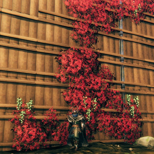

灰烬藤蔓
本站支持中英文站内搜索。带 ↗ 的链接指向外部网站；各页来源版本见页脚。


灰烬藤蔓可在灰烬之地找到，生长于焦骨废墟侧面。它们产出藤莓果串，是灰烬之地阶段食物的重要材料，也可用耕地耙和灰烬藤蔓种子种植。
耕作
- 采摘成熟藤莓果簇会获得3颗藤莓，并有20%概率额外获得1-4粒灰烬藤蔓种子，最常见数量为3。
- 灰烬藤每3小时20分钟可以结出一次浆果。
- 在任何生态区采摘灰烬藤蔓，都能获得藤莓种子。
- 可用耕地耙将藤莓种子种成灰烬藤蔓丛。
- 灰烬藤蔓需要附近墙壁供攀爬，才能产出可采摘果实。放置幼苗时确保不与墙壁相交，不要种得太近。
- 灰烬藤蔓会自行补充，无需重新种植。
- 种植灰烬藤蔓不要求位于灰烬之地生态区。
- 爬上墙后，土壤便无需继续保持耕作状态。
生长行为
- 正上方有屋顶或其他悬挑遮挡时，灰烬藤蔓无法生长。
- 灰烬藤蔓最远可种在距墙2米处，并须稍远于末端叶片与墙相交的位置。因此，合适距离约为离墙0.75 - 2米。
- 新果簇不能在距已有果簇约2米内生成。因此，无论植株年龄多大，整株藤蔓都无法同时拥有多个藤莓果簇。
- 它会有限度地向上和向外扩展，约为10x10米。
- 种植的灰烬藤蔓丛与墙上现有藤蔓之间须保持足够距离。因此，木墙两侧原本健康的藤蔓，一侧生长后可能使另一侧过于拥挤，除非种植位置距墙接近2米。精心放置可在木墙两侧种植，较厚石墙则容易支持双面生长。
- 它不能转弯。
- 偶尔可跨过最多2米的小空隙，例如门口。
- 可在木材、石材、焰金属和其他可建造材料上生长。
- 也可在柱子、制作台、木材堆、火把等通常不视为墙壁的可建造对象上生长。
- 灰烬藤蔓可长在门上，但开门会移除支撑，使其迅速断裂。
- 墙上藤蔓的扩展，不受同一墙壁另一侧灰烬藤蔓限制。
- 它需要墙壁，但不需要空气。灰烬藤蔓在一定程度上能长在埋入地面的墙上。若墙壁前几米借助地形支撑，可将墙向下延伸至地形内，帮助藤蔓开始生长。
种植灰烬藤蔓
| 青青草原 | 是 |
|---|---|
| 黑暗林山 | 是 |
| 无尽之海 | 是 |
| 幽暗沼泽 | 是 |
| 凛冽雪山 | 否 |
| 北境平原 | 是 |
| 迷雾之地 | 是 |
| 灰烬之地 | 是 |
说明
图片库
- 木墙上生长的灰烬藤蔓，带有藤莓果簇。
-
生长在木墙上、尚未结果的灰烬藤
- 不同生长阶段的种植灰烬藤蔓。最左侧无法生长；第二株刚种下，处于第一阶段；下一株处于第二阶段；最后是第三阶段，即附着墙壁。


Ashvine can be found in the Ashlands, growing on the side of Charred ruins. They spawn Vineberry clusters, which are an important ingredient for Ashlands tier food, and can be planted using a Cultivator and Vineberry Seeds.
Farming
- Picking a ripe vineberry cluster produces 3 vineberries, with a 20% chance to also produce 1-4 Vineberry Seeds. 3 is the most common.
- Ashvine can spawn berries every 3 hours and 20 minutes.
- Vineberry seeds can be acquired when harvesting ashvine in any biome.
- Vineberry seeds can be planted as an ashvine cluster using a Cultivator.
- Ashvine requires a nearby wall (to grow up) to be able to be harvested. Make sure the seedling does not clip into the wall when placing (do not place it too close to the wall).
- Ashvine does not need to be replanted, it is self-replenishing.
- The Ashlands biome is *not* required for growing ashvine.
- Once on the wall, the soil no longer needs to be cultivated.
Growth Behavior
- Ashvine cannot grow if there is a roof or other type of overhang directly above it.
- Ashvine may be placed up to 2 meters from a wall, and must be slightly further than the distance where the last leaves clip into the wall. That creates the distance range as approximately 0.75 - 2 meters from a wall.
- Clusters cannot spawn closer than about 2 meters from existing clusters. This means that regardless of age, the whole vine cannot have multiple vineberry clusters at the same time.
- It will grow upward and outward to a limited extent, around 10x10 meters.
- Planted ashvine clusters must have adequate distance between themselves and existing ashvine on a wall. This means that when one of two healthy ashvine clusters on opposite sides of a wooden wall grows, the other may become crowded if not nearly 2 meters from the wall. When planted carefully, two sides of a wooden wall may be planted on, and thicker stone walls will easily support both sides being grown on.
- It cannot turn corners.
- It can occasionally jump small gaps of up to 2 meters, like a doorway.
- It can grow on wood, stone, flametal, and any other buildable materials.
- It can be grown on poles, crafting benches, wood piles, torches, and other buildable objects not generally considered walls.
- Ashvine can grow on doors. However, they will quickly break when the door is opened as it removes the support.
- The expansion of wall vines will not be limited by ashvine on the opposite side of the same wall.
- It needs a wall, but it does NOT need air. Ashvine are to some extent able to grow on walls that are buried. This can be useful to start ashvine on walls that use terrain for the first few meters, as the walls can be extended down into the terrain.
Planting Ashvine
| Meadows | Yes |
|---|---|
| Black Forest | Yes |
| Ocean | Yes |
| Swamp | Yes |
| Mountain | No |
| Plains | Yes |
| Mistlands | Yes |
| Ashlands | Yes |
Notes
- Ashvine cannot grow in the Mountains and Deep North, regardless of fires or shield generators.
- Each wall vine has 30 health. Destroying one does not impact the rest of the vine, though it may limit the vine's expansion
Gallery
-
Ashvine growing on a wooden wall, with a Vineberry cluster
-
Ashvine growing on a wooden wall, without berries
-
Planted Ashvine in different stages of life. The leftmost one is unable to grow. Second is one freshly planted, in its first stage of life. Next is one in its second stage of growth, and finally, the third stage, which is to cling to the wall.